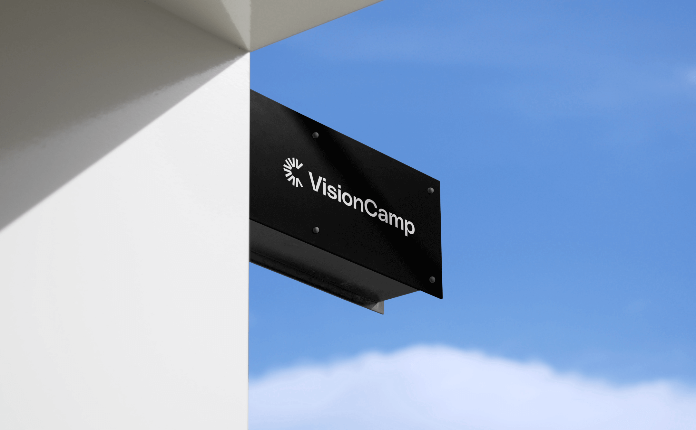
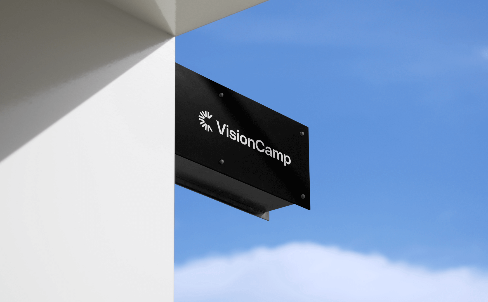
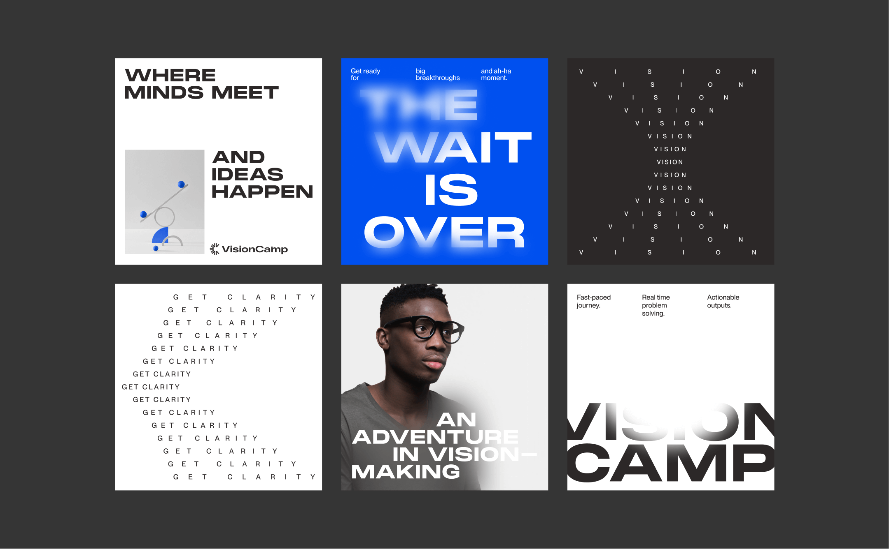
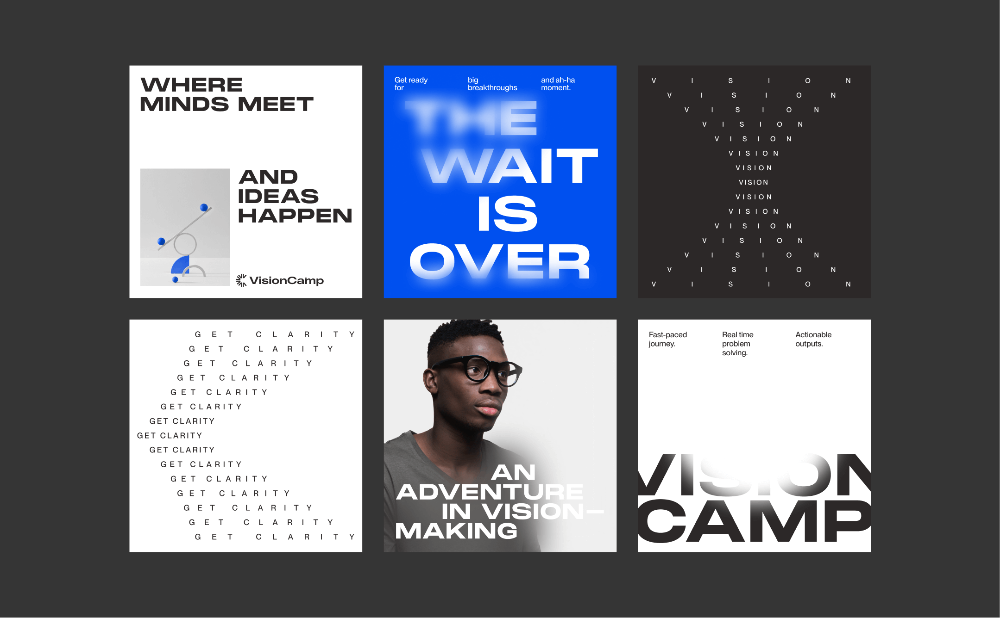
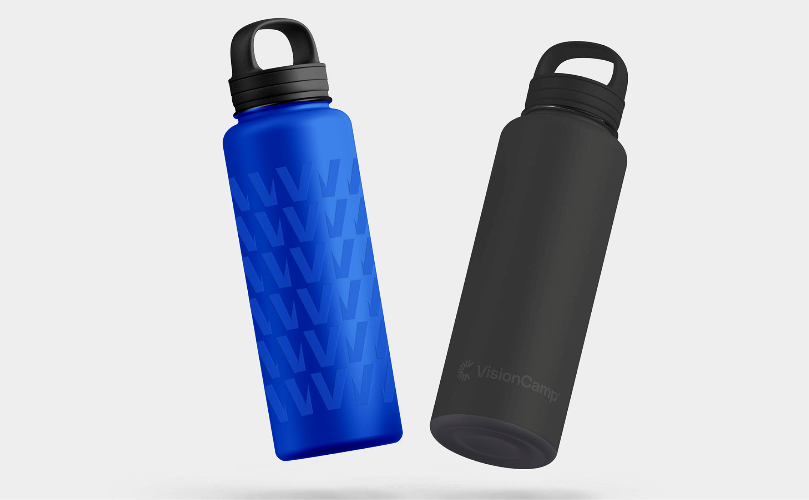
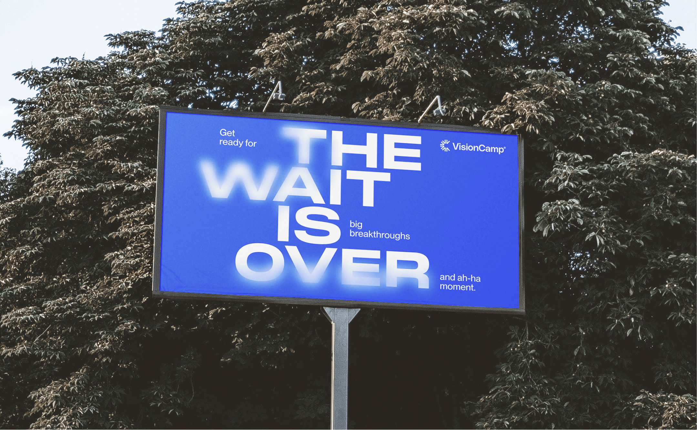
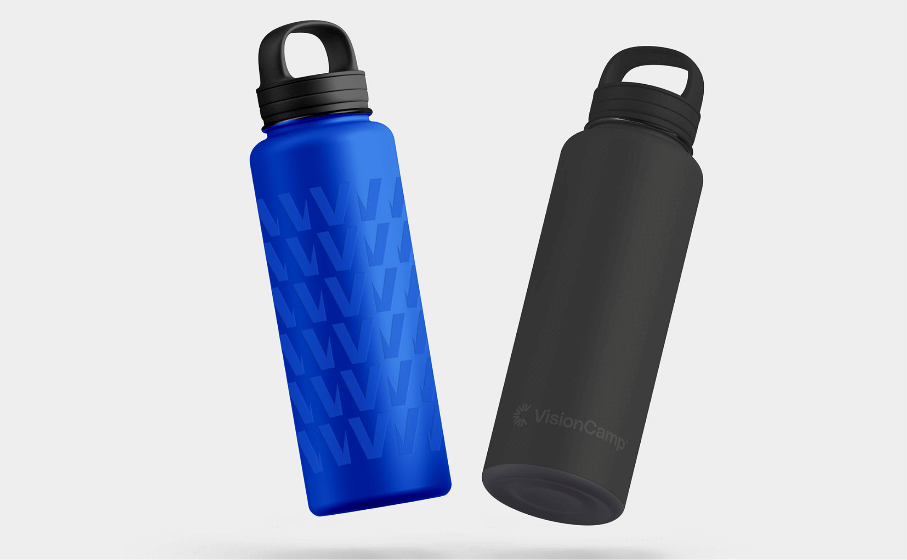
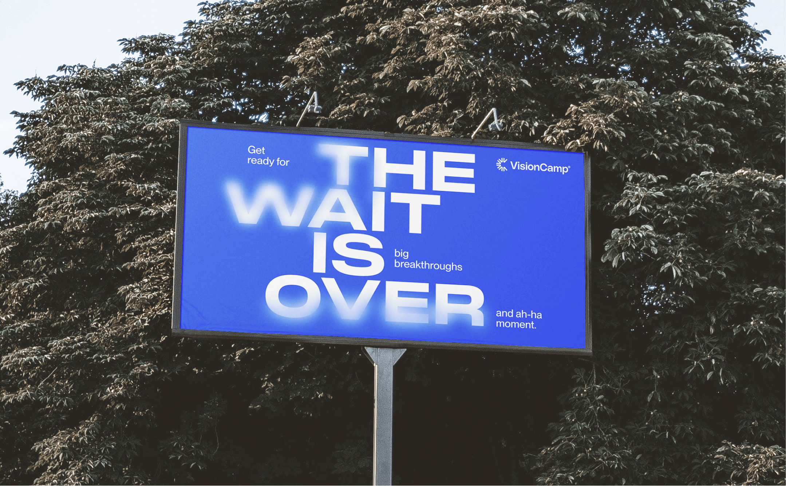

Grab your jacket, your boots, your tent or your canoe - we’re off to
discover new horizons. This is what the explorer archetype is all about,
and what VisionCamp was created to be. Naturally independent, authentic,
and curious, we follow unique paths and motivate others to explore the
uncharted territory of their brands. We help those wanting to break free
from the norm, who are not satisfied with standing still. We are the
guides who will help leaders to reach new summits, push themselves, gain
clarity over their direction and give them the tools and maps they need
to get there. We’re a brave space for business leaders to draw up a
chair around our bonfire, pour out a cup of cocoa and learn from us, the
vision explorers and their fellow adventurers about how to grow their
brands
Client |
https://wearemotto.com/
Art Director | Liri Argov
Brand Designer | Anastasia
Vlasenko
Strategy | Eden Vidal


 



 

 
